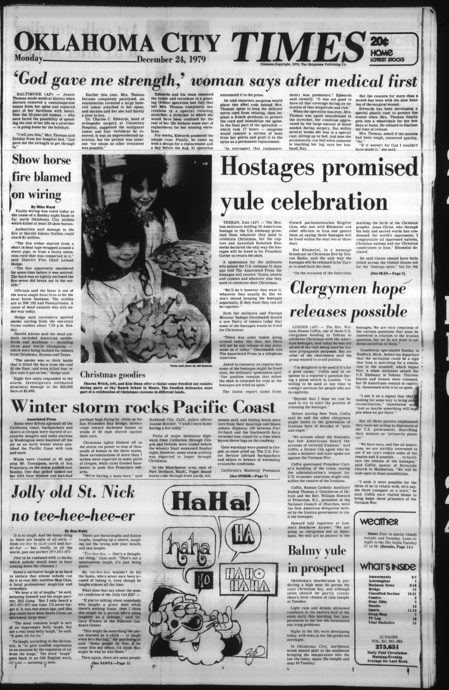

HN HN-722 · December 24, 1979 · War, Conflict & Security > Terrorism & Political Violence > Hostage attacks
Source: Banner-Graphic, p. 2 — original page; National Archives crisis chronology and selected records.
Report: A Christmas Eve dispatch counted 50 American hostages and reported the militants' promise of holiday provisions, while quoting the captors and Ayatollah Khomeini insisting that only return of the former shah could secure release.
Assessment: A bargaining demand, not a timeless condition or the actual settlement. Hostages ultimately returned on January 20, 1981, after 444 days, through a more complex diplomatic arrangement. The changing 60/50/52 descriptions require attention to dates and who was included.
Authentic scans retrieved from Gateway to Oklahoma History (Oklahoma Historical Society). Article crops are located using the archive's own OCR word coordinates and rendered at native crop resolution; page scans are reduced-size access renditions. No images were generated, mocked, or retouched.

Not yet acquired. Queued for provider-specific acquisition testing (see source-acquisition manifest).
URL (preserved verbatim): https://newspapers.library.in.gov/?a=d&d=BG19791224.1.2
Saved research report: Historical_Newspaper_Event_Research_703-727_2026-10-23.md
Evidence note: A newspaper report means a historical publication made a claim; it does not establish that claim as fact. Contemporary reporting is separated from later scholarly context and our own assessment.